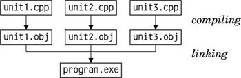

Getting Started with C++A C++ program consists of one or more compilation units. Each compilation unit is a separate source code file, typically with a .cpp extension (other common extensions are .cc and .cxx) that the compiler processes in one run. For each compilation unit, the compiler generates an object file, with the extension .obj (on Windows) or .o (on Unix and Mac OS X). The object file is a binary file that contains machine code for the architecture on which the program will run. Once all the .cpp files have been compiled, we can combine the object files together to create an executable using a special program called the linker. The linker concatenates the object files and resolves the memory addresses of functions and other symbols referenced in the compilation units. Exhibit B.1. The C++ compilation process (on Windows) When building a program, exactly one compilation unit must contain a main() function that serves as the program's entry point. This function doesn't belong to any class; it is a global function. Unlike Java, where each source file must contain exactly one class, C++ lets us organize the compilation units as we want. We can implement several classes in the same .cpp file, or spread the implementation of a class across several .cpp files, and we can give the source files any names we like. When we make a change in one particular .cpp file, we only need to recompile that file and then relink the application to create a new executable. Before we go further, let's quickly review the source code of a trivial C++ program that computes the square of an integer. The program consists of two compilation units: main.cpp and square.cpp. Here's square.cpp:
1 double square(double n)
2 {
3 return n * n;
4 }
This file simply contains a global function called square() that returns the square of its parameter. Here's main.cpp:
1 #include <cstdlib>
2 #include <iostream>
3 using namespace std;
4 double square(double);
5 int main(int argc, char *argv[])
6 {
7 if (argc != 2) {
8 cerr << "Usage: square <number>" << endl;
9 return 1;
10 }
11 double n = strtod(argv[1], 0);
12 cout << "The square of " << argv[1] << " is " << square(n) << endl;
13 return 0;
14 }
The main.cpp source file contains the main() function's definition. In C++, this function takes an int and a char * array (an array of character strings) as parameters. The program's name is available as argv[0] and the command-line arguments as argv[1], argv[2], …, argv[argc - 1]. The parameter names argc ("argument count") and argv ("argument values") are conventional. If the program doesn't access the command-line arguments, we can define main() with no parameters. The main() function uses strtod() ("string to double"), cout (C++'s standard output stream), and cerr (C++'s standard error stream) from the Standard C++ library to convert the command-line argument to a double and to print text to the console. Strings, numbers, and end-of-line markers (endl) are output using the << operator, which is also used for bit-shifting. To access this standard functionality, we need the #include directives on lines 1 and 2. The using namespace directive on line 3 tells the compiler that we want to import all identifiers declared in the std namespace into the global namespace. This enables us to write strtod(), cout, cerr, and endl instead of the fully-qualified std::strtod(), std::cout, std::cerr, and std::endl. In C++, the :: operator separates the components of a complex name. The declaration on line 4 is a function prototype. It tells the compiler that a function exists with the given parameters and return value. The actual function can be located in the same compilation unit or in another compilation unit. Without the function prototype, the compiler wouldn't let us call the function on line 12. Parameter names in function prototypes are optional. The procedure to compile the program varies from platform to platform. For example, to compile on Solaris with the Sun C++ compiler, we would type the following commands: CC -c main.cpp CC -c square.cpp ld main.o square.o -o square The first two lines invoke the compiler to generate .o files for the .cpp files. The third line invokes the linker and generates an executable called square, which we can invoke as follows: ./square 64 The program outputs the following message to the console: The square of 64 is 4096 To compile the program, you probably want to get help from your local C++ guru. Failing this, you can still read the rest of this appendix without compiling anything and follow the instructions in Chapter 1 to compile your first C++/Qt application. Qt provides tools that make it easy to build applications on all platforms. Back to our program: In a real-world application, we would normally put the square() function prototype in a separate file and include that file in all the compilation units where we need to call the function. Such a file is called a header file and usually has a .h extension (.hh, .hpp, and .hxx are also common). If we redo our example using the header file approach, we would create a file called square.h with the following contents: 1 #ifndef SQUARE_H 2 #define SQUARE_H 3 double square(double); 4 #endif The header file is bracketed by three preprocessor directives (#ifndef, #define, and #endif). These directives ensure that the header file is processed only once, even if the header file is included several times in the same compilation unit (a situation that can arise when header files include other header files). By convention, the preprocessor symbol used to accomplish this is derived from the file name (in our example, SQUARE_H). We will come back to the preprocessor later in this appendix. The new main.cpp file looks like this:
1 #include <cstdlib>
2 #include <iostream>
3 #include "square.h"
4 using namespace std;
5 int main(int argc, char *argv[])
6 {
7 if (argc != 2) {
8 cerr << "Usage: square <number>" << endl;
9 return 1;
10 }
11 double n = strtod(argv[1], 0);
12 cout << "The square of " << argv[1] << " is " << square(n) << endl;
13 return 0;
14 }
The #include directive on line 3 expands to the contents of the file square.h. Directives that start with a # are picked up by the C++ preprocessor before the compilation proper takes place. In the old days, the preprocessor was a separate program that the programmer invoked manually before running the compiler. Modern compilers handle the preprocessor step implicitly. The #include directives on lines 1 and 2 expand to the contents of the cstdlib and iostream header files, which are part of the Standard C++ library. Standard header files have no .h suffix. The angle brackets around the file names indicate that the header files are located in a standard location on the system, while double quotes tell the compiler to look in the current directory. Includes are normally gathered at the top of a .cpp file. Unlike .cpp files, header files are not compilation units in their own right and do not result in any object files. They may only contain declarations that enable different compilation units to communicate with each other. Consequently, it would be inappropriate to put the square() function's implementation in a header file. If we did so in our example, nothing bad would happen, because we include square.h only once, but if we included square.h from several .cpp files, we would get multiple implementations of the square() function (one per .cpp file that includes it). The linker would then complain about multiple (identical) definitions of square() and refuse to generate an executable. Inversely, if we declare a function but never implement it, the linker complains about an "unresolved symbol". So far, we have assumed that an executable only consists of object files. In practice, they often also link against libraries that implement ready-made functionality. There are two main types of library:
For the square program, we link against the Standard C++ library, which is implemented as a dynamic library on most platforms. Qt itself is a collection of libraries that can be built either as static or as dynamic libraries (the default is dynamic). |